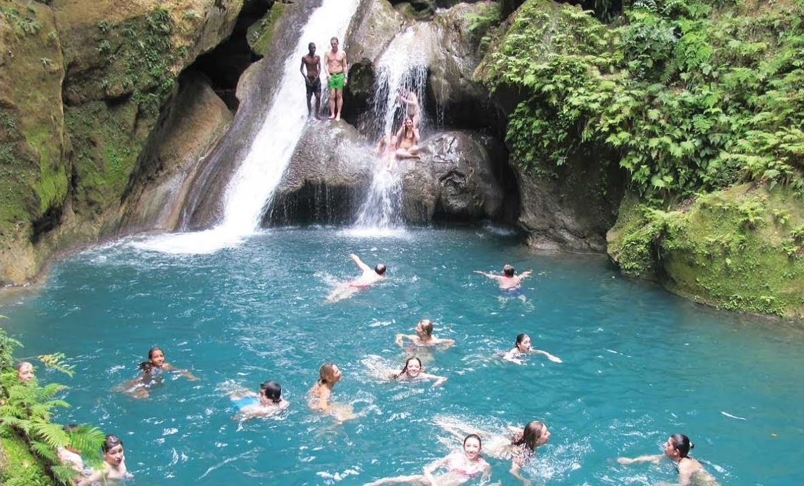

Nous vous offrons une services de qualite. Nos Logements entier vous offrent intimite et serenite pendant votre Sejour. L'hotellerie HideAway vous propose un Hebergement climatise avec un Balcon et une Connexion Wi-Fi gratuite.
Il Dispose des Jardins en commun et des Parking prive gratuite. Des Salons en commun et aussi Une cuisine en commun.
Il Possede Aussi des Bars et Des Piscines a l'exterieures.Les conditions d'annulation et de prépaiement varient en fonction du type d'hébergement. Veuillez saisir les dates de votre séjour et consulter les conditions de la chambre choisie.
Enfants et lits
Conditions relatives aux enfants. Tous les enfants sont les bienvenus.Pour voir les tarifs et les informations associés à la taille de votre groupe, veuillez ajouter à votre recherche le nombre d'enfants avec qui vous voyagez ainsi que leur âge.
Le chalet se compose d'une chambre séparée, d'une salle de bains avec articles de toilette gratuits et d'un coin salon.L'Hotellerie Vous sert Un petit-déjeuner continental.
L'aéroport international Toussaint Louverture, le plus proche, est implanté à 39 km. Nous parlons votre langue Veuillez consulter les conditions de votre réservation
Pour les réservations effectuées à partir du 6 avril 2020, nous vous conseillons de prendre en compte les risques liés au coronavirus (COVID-19) ainsi que les mesures mises en place par les différents gouvernements. Si vous ne réservez pas un tarif flexible, il est possible que vous ne puissiez pas prétendre à un remboursement.
Votre demande d'annulation sera traitée par l'établissement, en fonction des conditions que vous aurez choisies ainsi que des lois relatives aux droits des consommateurs, le cas échéant.
En cette période incertaine, nous vous conseillons de réserver une option avec annulation gratuite. Si vos projets de voyage sont ensuite amenés à changer, vous pourrez alors annuler gratuitement jusqu'à la fin de la période d'annulation gratuite.
Plusieurs piscine a votre disposition.

Chute d'Olympe pour un bon moment de détente
Nous vous offrons une services de qualite Les suppléments ne sont pas automatiquement calculés dans le montant total de la réservation sur le site et doivent être réglés séparément directement auprès de l'établissement.
Le nombre maximum de lits d'appoint et de lits bébé/enfant dépend de l'hébergement que vous choisissez. Veuillez vérifier l'occupation maximum de celui que vous sélectionnez.
Tous les lits bébé et lits d'appoint sont soumis à disponibilité. Oui, certaines options disposent d'une terrasse. Vous trouverez plus de détails sur les équipements de l'établissement coin perdu guest house sur cette page.
Les tarifs fixés par l'établissement coin perdu HideAway house peuvent varier en fonction de votre séjour (par ex. les dates que vous avez sélectionnées, les conditions de l'hôtel, etc.). Indiquez vos dates pour voir les tarifs.
La plage la plus proche se trouve à seulement 1 km de l'établissement coin perdu Hotellerie HideAwayL'établissement coin perdu Hotel HideAway se trouve à 17 km du centre (Jacmel)..
L'enregistrement à l'établissement HideAway se fait à partir de 14h00 et le départ est possible jusqu'à 12h00.
Nous vous offrons une services de qualiteOn vous invite a regarder nos plats disponible et nos plats Delicieux a l’Hotellerie HideAway Resto
On vous invite a deguster le Cabri(chevre) Ou le Lambi(crustace) Ce sont Deux(2) Plats typiquement Creole
Il fait bon aussi a Savourer le Cafe Corse haitien sous le soleil matinal eclairant la Plage etincelante.Les plats sont servis dans une assiette.
Les Convives recevront alors des assiettes dresses a la Nous vous offrons une services de qualiteOn vous invite a regarder nos plats disponible et nos plats Delicieux a l’Hotellerie HideAway Resto
On vous invite a deguster le Cabri(chevre) Ou le Lambi(crustace) Ce sont Deux(2) Plats typiquement Creole
Il fait bon aussi a Savourer le Cafe Corse haitien sous le soleil matinal eclairant la Plage etincelante.Les plats sont servis dans une assiette.
Les Convives recevront alors des assiettes dresses a la
Des délicieux plats Créole poissons
Et pleins d'autre délice Haitienne